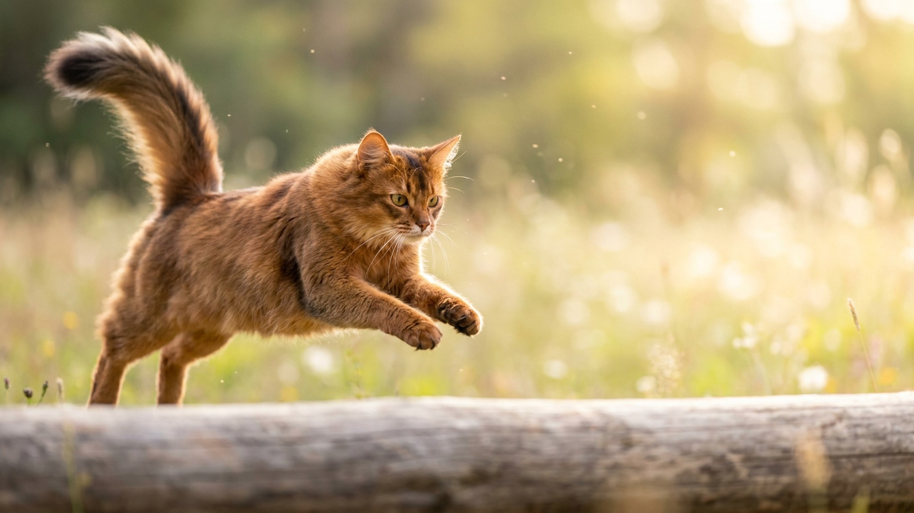

Возьмите абиссинскую кошку, добавьте пышную шубу и роскошный лисий хвост — получится сомали. Из-за длинной шерсти её иногда принимают за спокойную «диванную» кошку, и это главная ошибка будущего хозяина. Внутри — тот же огонь, ум и потребность в движении. Разбираем характер породы и уход за шерстью, которая, вопреки виду, почти не путается.
🐾 Экономьте на лишних визитах к врачу
Сначала спросите AI-ветеринара в AnimaLife — часто этого достаточно, чтобы понять, нужен ли визит к врачу.
Сомали — это длинношёрстная версия абиссинской кошки. Родство видно с первого взгляда: та же тикированная шерсть, где каждый волосок окрашен полосками, те же большие уши и внимательный взгляд. Отличие — полудлинная шерсть, «штанишки» на задних лапах, воротник и тот самый пушистый хвост, за который породу прозвали «кошка-лиса».
Окрас переливается на свету и кажется живым — от тёплого рыжего до голубого и фавн. Но берут сомали не за внешность, а за темперамент.
Сомали — активная, любопытная и очень сообразительная кошка. Она исследует шкафы, открывает дверцы, носит в зубах мелкие предметы и с удовольствием играет в «принеси». Это кошка-компаньон: ей важно быть рядом и участвовать в делах хозяина, а не наблюдать со стороны.
Что стоит учесть заранее:
🐾 Всё о вашем питомце — в одном приложении
AI-ветеринар, дневник, напоминания о прививках и уходе. Установите AnimaLife — это бесплатно, в Telegram и MAX.
🐾 Понравился разбор?
Подпишитесь на канал — каждый день разбираем по одному тревожному симптому у кошек и собак: что в пределах нормы, а когда пора к врачу. Подпишитесь, чтобы не пропустить разбор, который может спасти здоровье вашего питомца.
Пугаться шубы не стоит. У сомали почти нет плотного подшёрстка, поэтому шерсть тонкая, шелковистая и склонна к колтунам куда меньше, чем у персов или мейн-кунов. Достаточно вычёсывать её один-два раза в неделю — это убирает отмершие волоски и заодно превращается в приятный ритуал общения.
В сезон линьки вычёсывать стоит чаще. За хвостом и «штанишками» приглядывайте отдельно — там шерсть длиннее. Купать сомали часто не нужно: аккуратная кошка отлично справляется сама.
Эта порода — для тех, кто хочет активного, контактного компаньона и готов вкладывать в него время и внимание. Сомали расцветает в доме, где с ней играют, разговаривают и не оставляют надолго в пустой квартире. Если же вы мечтаете о тихой кошке, которая спит весь день, — присмотритесь к более спокойным породам.
Возьмите сомали, если вам нужен не «интерьерный» котик, а рыжий вихрь с умными глазами, который сделает дом живее. Взамен она отдаст всю свою преданность — а её у сомали в избытке.